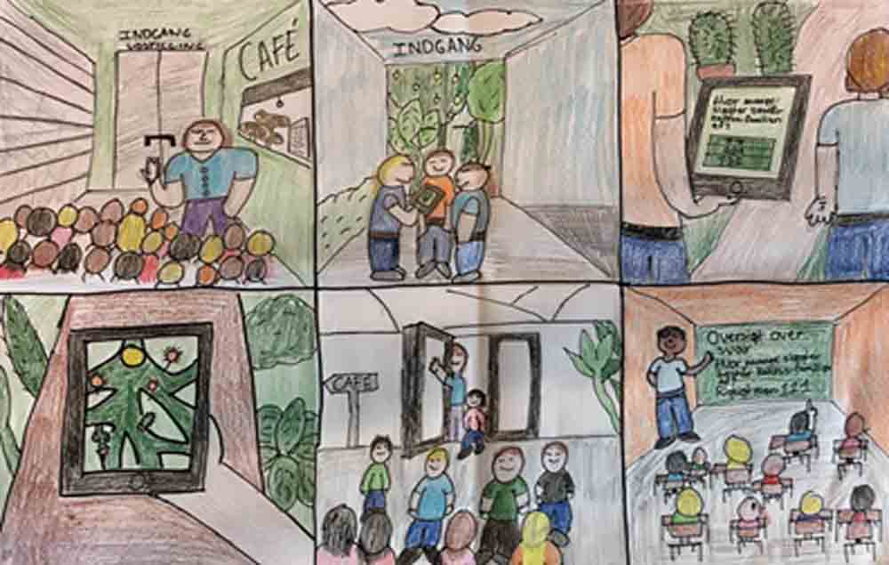

I case 1.1 skulle vi finde en kunde, der i forbindelse med kulturby 2017 tilbyder en service, oplevelse eller produkt. Vi skulle have kontakt med målgruppen og opnå indsigt i brugerens behov gennem research, På baggrund af dette skulle vi udvikle en webløsning med relevant indhold. Vi skulle bruge metoden SPRINT til dette projekt.
Vi startede med at finde ud af, hvilken målgruppe vi ville skabe en webløsning for, og vi kom frem til at vi ville arbejde med skoleklasser for at se, hvordan vi kan få børn og unge til at engagere sig mere for planter når de besøger væksthusene.
Vi fandt frem til, at vi ville lave en såkaldt plante app, hvor børn kunne gå rundt via gps inde i væksthusene og finde planter som de kunne fange ved at besvare nogen spørgsmål og svare rigtigt. Vi begyndte så lige så småt at lede efter lignende apps og løsninger hos andre virksomheder, såsom Pokemon Go, som har været en stor sensation siden udgivelsen.
Så gik vi i gang med at lave storyboards til at fortælle hvordan vi ønsker at elever og lærere skal bruge denne app til læringsformål. Og startede med at lave en prototype af vores app inde i Adobe Experience Design.
Imens vi drenge var i gang med at lave en prototype af vores app i Experience Design, så gik pigerne i gang med at lave en Landing Page som kunne blive lagt op, så app’en ville være nem at finde og tilgå.
Grundet tidspres havde vi fået lov til ikke at kode siden i HTML og CSS, men havde derfor valgt, at vores produkt skulle være et færdige projekt i Adobe Experience Design. Men en dreng fra gruppe valgte hjemmefra på den sidste dag at sætte sig i gang med kodning og fik sat en nogenlunde side op, sammenlignet med hvad vi havde lært i Interaktion på dette tidspunkt.
Set tilbage på den første case vi fik, Så synes jeg, at vi måske brugte alt for lang tid på at lave en prototype af app’en i Experience Design, frem for hvis vi havde kodet den i HTML og CSS i stedet for.
Jeg har også lært, at for at kunne lave et godt produkt for sin kunde, så er det yderst vigtigt at gøre sig forarbejde ordentligt, og få snakket med nogen brugere for at høre deres meninger og for at finde ud af, hvilke målgrupper der benytter sig af kunden.